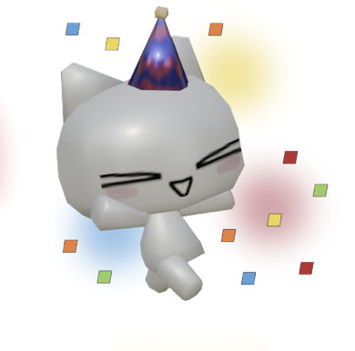

| Time | Subject | Mood |
|---|---|---|
| 7:30 - 8:15 AM | Physics ÀôêÉ∑Àô |  |
| 8:15 - 9:00 AM | Study Period ૮ ․ ․ ྀིა |  |
| 9:00 AM - 9:10 AM | Break ⋆˚✿˖° | |
| 9:10 - 10:40 AM | English ·≤òÔ∏µêëº |  |
| 10:40 - 12:10 PM | Social Science ✧˖°. |  |
| 12:10 PM -12:20 PM | Break ᧔ෆ᧓ | |
| 12:20 - 1:05 PM | Lunch üç∞ ‚ãÜÔΩ°Àö·°£ê≠© |  |
| 1:05 - 1:50 PM | Computer Science ꩜.ᐟ | |
| 1:50 - 2:35 PM | Study Period >ᴗ< |  |
| 2:35 PM -2:45 PM | Break ❀˖° | |
| 2:45 - 4:15 PM | Mathematics Àñüõ∏. |  |
Ellysz's Thoughts on Friday Schedule ₍^. .^₎⟆
Friday is a day all students look forward to. Potassium’s Friday schedule is decent but there are two issues. The first issue is Physics being the first subject of the day. Physics is one of the most difficult subjects in Grade 9 and they put it early in the morning — when students are exhausted from waking up early which means they won’t pay attention as much. The second issue is that after the first study period, the next subjects are English and SocSci — both double periods with no break in between. By the end of these subjects, the students are struggling to keep their eyes open, let alone focus on the lesson.
Luckily enough, the rest of the day is usually relaxing unless there’s a major requirement like an exam. The last two subjects, ComSci and Math, are enjoyed by most students in Potassium. After the last two subjects, the school week is finally done. Now, all students can get their well-deserved rest on the weekends and focus on non-academic related things like their social life. With the newfound motivation and energy found from the weekend, all of them can survive the next school week.